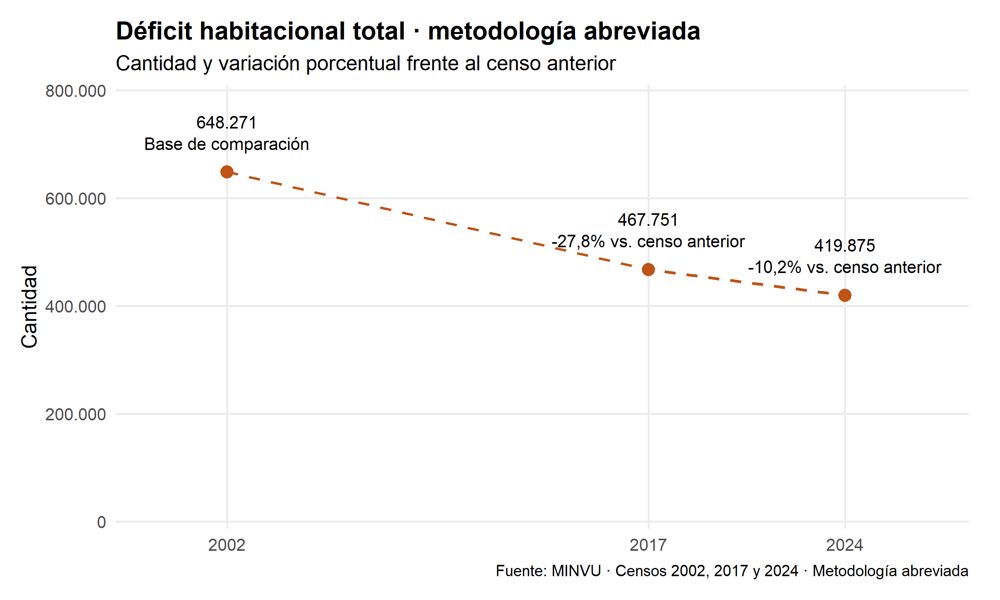
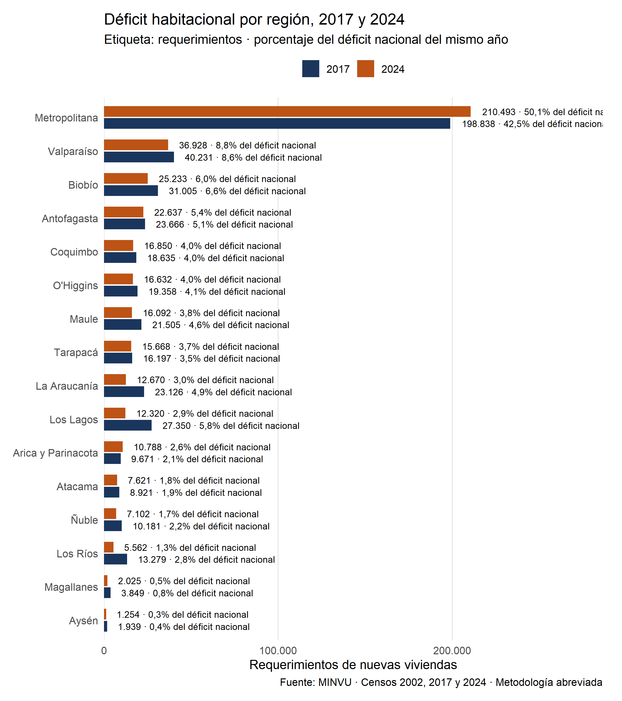
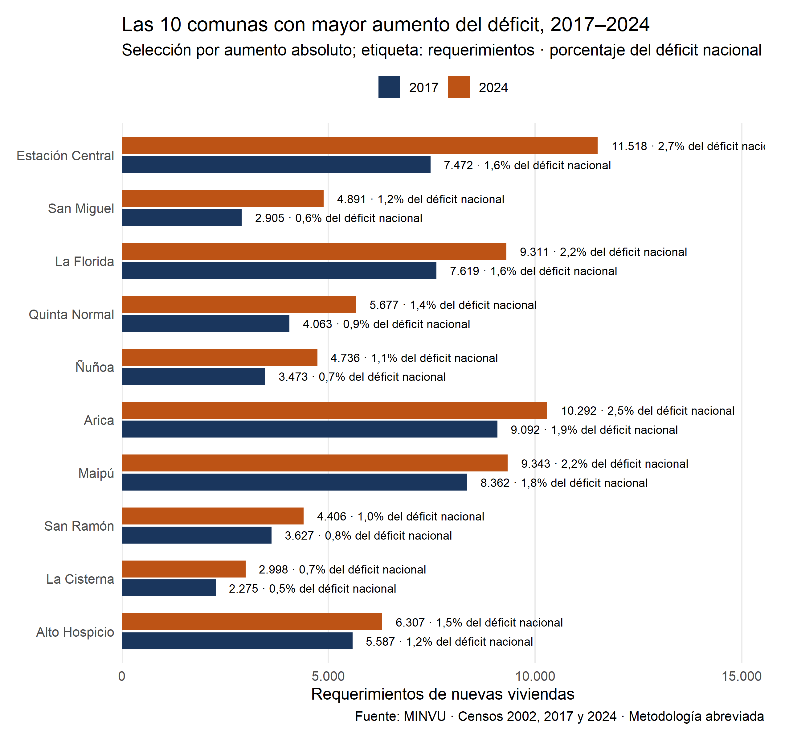

¿Cómo evolucionaron los requerimientos de nuevas viviendas? Comparamos el país y después las 16 regiones. Todo el análisis usa exclusivamente la metodología abreviada del cuadro MINVU, que permite comparar 2002, 2017 y 2024.
Concepto
Cómo leerlo
Déficit habitacional cuantitativo
Requerimientos de nuevas viviendas identificados por la metodología. Incluye viviendas irrecuperables, hogares allegados, núcleos allegados hacinados y viviendas con hacinamiento no ampliable. No equivale a restar viviendas a hogares.
Definiciones y versiones metodológicas: MINVU. La hoja “Presentación” del Excel describe los componentes y registra la corrección del 4 de diciembre de 2025.
Conceptos para leer esta página
Vivienda: unidad habitacional registrada por el Censo. No es lo mismo que un hogar.
Hogar: personas que viven juntas y comparten presupuesto de alimentación. En una vivienda puede haber más de un hogar.
Déficit habitacional cuantitativo: requerimientos de nuevas viviendas estimados por MINVU. No representa personas ni ventas de viviendas.
Metodología abreviada: versión homologada por MINVU para comparar 2002, 2017 y 2024.
Solo hay tres observaciones censales. Los puntos son los datos; las líneas discontinuas los conectan, sin estimar los años intermedios. El eje respeta los intervalos de 15 años y 7 años.
Cada gráfico especifica su porcentaje: la evolución nacional muestra la variación frente al censo previo; los gráficos territoriales muestran la participación en el déficit nacional del mismo año.
Evolución nacional
Déficit habitacional total
Código
etiquetas_deficit <-paste0(n(nacional$deficit), "\n",ifelse(is.na(nacional$variacion_deficit_pct),"Base de comparación",paste0(ifelse(nacional$variacion_deficit_pct >0, "+", ""),porcentaje(nacional$variacion_deficit_pct), " vs. censo anterior") ))grafico_deficit_nacional <-ggplot(nacional, aes(x = anio, y = deficit)) +geom_line(colour = paleta[2], linewidth = .8, linetype ="dashed") +geom_point(colour = paleta[2], size =3) +geom_text(aes(label = etiquetas_deficit), vjust =-.65, size =3.5,lineheight =1.05) +scale_x_continuous(breaks =c(2002, 2017, 2024),expand =expansion(mult =c(.18, .2))) +scale_y_continuous(labels =label_number(big.mark =".", decimal.mark =","),limits =c(0, NA), expand =expansion(mult =c(.02, .25))) +labs(title ="Déficit habitacional total · metodología abreviada",subtitle ="Cantidad y variación porcentual frente al censo anterior",x =NULL, y ="Cantidad", caption = fuente_abreviada ) +theme(plot.title =element_text(face ="bold"),plot.caption =element_text(size =9))print(grafico_deficit_nacional)

Variación (%) = 100 × (déficit del censo actual / déficit del censo anterior − 1). En 2002 no se calcula variación porque no hay un censo previo en la serie.
Cómo leer el gráfico. El déficit abreviado pasa de 648.271 a 419.875 entre 2002 y 2024: una variación acumulada de -35,2%. Entre 2017 y 2024 cambia -10,2%. La reducción del total representa menos requerimientos medidos por la misma metodología; no significa necesariamente que se hayan construido exactamente tantas viviendas.
Déficit habitacional por región
La comparación se concentra en los dos censos más recientes. Cada par de barras corresponde a la misma región y muestra el total de déficit habitacional de 2017 y 2024. La etiqueta combina la cantidad y la participación de esa región en el déficit nacional del mismo año.
Código
# Comparación legible entre los dos censos más recientes.# El orden se fija según el total de 2024. La etiqueta muestra la participación# de cada región en el déficit nacional del mismo censo.regional_17_24 <- regional |> dplyr::filter(anio %in%c(2017, 2024)) |> dplyr::group_by(region) |> dplyr::mutate(deficit_2024 = deficit[anio ==2024]) |> dplyr::ungroup()orden_regional <- regional_17_24 |> dplyr::distinct(region, deficit_2024) |> dplyr::arrange(deficit_2024) |> dplyr::pull(region)regional_17_24 <- regional_17_24 |> dplyr::mutate(anio =factor(anio, levels =c(2017, 2024)),region =factor(region, levels = orden_regional),etiqueta =paste0(n(deficit), " · ",porcentaje(participacion_deficit_nacional_pct)," del déficit nacional") )grafico_regional_17_24 <-ggplot( regional_17_24, aes(x = deficit, y = region, fill = anio)) +geom_col(position =position_dodge(width = .72), width = .64) +geom_text(aes(label = etiqueta), position =position_dodge(width = .72),hjust =-.08, size =3 ) +scale_fill_manual(values =c("2017"= paleta[1], "2024"= paleta[2])) +scale_x_continuous(labels =label_number(big.mark =".", decimal.mark =","),expand =expansion(mult =c(0, .36)) ) +labs(title ="Déficit habitacional por región, 2017 y 2024",subtitle ="Etiqueta: requerimientos · porcentaje del déficit nacional del mismo año",x ="Requerimientos de nuevas viviendas", y =NULL, fill ="Censo",caption = fuente_abreviada ) +theme(panel.grid.major.y =element_blank(), legend.position ="top")print(grafico_regional_17_24)

Etiqueta: requerimientos · 100 × déficit regional / déficit nacional del mismo año. Las participaciones de las 16 regiones suman 100% antes del redondeo.
Cómo leer el gráfico. Aunque el total nacional disminuyó entre 2017 y 2024, la Región Metropolitana aumentó de 198.838 a 210.493 requerimientos y su participación en el déficit nacional pasó de aproximadamente 42,5% a 50,1%. El número de requerimientos y la concentración territorial responden preguntas distintas: una región puede concentrar una gran fracción del total por su tamaño, sin ser necesariamente la que presenta el mayor problema proporcional respecto de su población u hogares.
Comparabilidad territorial
El cuadro MINVU distribuye los tres censos entre las mismas 16 etiquetas regionales, incluidas Ñuble, Biobío, Arica y Parinacota y Los Ríos. Usamos esa agrupación publicada; no mezclamos los totales con antiguas divisiones regionales.
Se verificó que, en cada año, viviendas, hogares y déficit de las comunas asignadas por el libro a cada región suman su fila regional, y que las regiones suman el país. Es una comprobación interna del cuadro, no una auditoría cartográfica independiente de todos los cambios de límites comunales. Las cifras históricas bajo estas etiquetas no implican que todas esas regiones existieran administrativamente en 2002.
Comunas con mayor aumento del déficit
La comparación pasa ahora al nivel comunal. Seleccionamos las diez comunas cuyo déficit habitacional total aumentó más en cantidad absoluta entre 2017 y 2024. La selección no se hace por porcentaje, porque variaciones porcentuales altas sobre cifras muy pequeñas pueden ocultar el número de requerimientos involucrado.
Cada par de barras compara la misma comuna, identificada por su código INE en el procesamiento. La etiqueta combina el número de requerimientos y el porcentaje que representa del déficit nacional en el mismo censo.
Código
# Comparar la misma comuna en ambos censos usando el código INE.# Seleccionamos aumentos en cantidad absoluta, no aumentos porcentuales.top_aumentos_comunales <- comunal |> dplyr::filter(anio %in%c(2017, 2024)) |> dplyr::select(codigo_comuna_ine, region, comuna, anio, deficit, participacion_deficit_nacional_pct) |> tidyr::pivot_wider(names_from = anio,values_from =c(deficit, participacion_deficit_nacional_pct),names_glue ="{.value}_{anio}" ) |> dplyr::mutate(aumento_absoluto = deficit_2024 - deficit_2017,aumento_porcentual =100* (deficit_2024 / deficit_2017 -1) ) |> dplyr::filter(aumento_absoluto >0) |> dplyr::arrange(dplyr::desc(aumento_absoluto), comuna) |> dplyr::slice_head(n =10)top_aumentos_largo <- top_aumentos_comunales |> dplyr::select(comuna, region, aumento_absoluto, aumento_porcentual, deficit_2017, deficit_2024, participacion_deficit_nacional_pct_2017, participacion_deficit_nacional_pct_2024) |> tidyr::pivot_longer(cols =c(deficit_2017, deficit_2024, participacion_deficit_nacional_pct_2017, participacion_deficit_nacional_pct_2024),names_to =c(".value", "anio"),names_pattern ="(.*)_(2017|2024)" ) |> dplyr::mutate(anio =factor(anio, levels =c("2017", "2024")),comuna =factor(comuna, levels =rev(top_aumentos_comunales$comuna)),etiqueta =paste0(n(deficit), " · ",porcentaje(participacion_deficit_nacional_pct)," del déficit nacional") )grafico_top_aumentos_comunales <-ggplot( top_aumentos_largo,aes(x = deficit, y = comuna, fill = anio)) +geom_col(position =position_dodge(width = .72), width = .64) +geom_text(aes(label = etiqueta),position =position_dodge(width = .72), hjust =-.08, size =3 ) +scale_fill_manual(values =c("2017"= paleta[1], "2024"= paleta[2])) +scale_x_continuous(labels =label_number(big.mark =".", decimal.mark =","),expand =expansion(mult =c(0, .35)) ) +labs(title ="Las 10 comunas con mayor aumento del déficit, 2017–2024",subtitle ="Selección por aumento absoluto; etiqueta: requerimientos · porcentaje del déficit nacional",x ="Requerimientos de nuevas viviendas", y =NULL, fill ="Censo",caption = fuente_abreviada ) +theme(panel.grid.major.y =element_blank(), legend.position ="top")print(grafico_top_aumentos_comunales)

Selección: diez aumentos absolutos más grandes de déficit entre 2017 y 2024. Etiqueta: requerimientos · 100 × déficit comunal / déficit nacional del mismo año.
Cómo leer el gráfico. Cada par de barras compara la misma comuna en 2017 y 2024. El ranking se determina por el aumento en número de requerimientos, no por su tasa porcentual; por ello, las comunas grandes tienen más posibilidades de aparecer aunque su deterioro proporcional no sea el mayor. La etiqueta porcentual muestra cuánto representa cada comuna dentro del déficit nacional del año correspondiente.
La lista describe los mayores aumentos observados, pero no identifica una causa. Un aumento puede combinar cambios en el número y composición de hogares, hacinamiento, allegamiento, condiciones de las viviendas y el modo en que el Censo mide esos componentes.
Precauciones y alcance
Las cantidades representan requerimientos de nuevas viviendas; no representan personas ni transacciones inmobiliarias.
Una reducción del déficit no significa que se hayan construido exactamente tantas viviendas: también cambian los hogares, su composición y sus condiciones de habitabilidad.
Las cifras describen censos. No identifican qué parte del cambio produjo un gobierno, un subsidio u otra política; tampoco permiten atribuir resultados al plan de 2026.
La comparación mantiene una misma metodología. Los porcentajes se calculan con los valores sin redondear y se muestran con un decimal.
Este diagnóstico no identifica damnificados por incendios de 2026, obras pendientes, precios de vivienda nueva ni capacidad de pago. No estima el efecto de una reducción del IVA.
Preguntas que estos datos dejan abiertas
¿Qué hogares serían alcanzados por cada medida, cómo cambiarían los precios y cuánto avanzaría la reconstrucción? Se necesitan catastros, avance y costos de obras, oferta de viviendas, acceso al crédito y una comparación que permita distinguir el efecto de la política de otros cambios demográficos y económicos.
El procesamiento lee la hoja “2024 2017 2002 Abreviada”, conserva los totales nacionales, regionales y comunales, y comprueba además la suma de los cuatro componentes del déficit. El original permanece en 06_vivienda/datos_originales/minvu_censos.xlsx. Para reconstruir las tres series, ejecutar desde el proyecto:
Para explorar sin generar la web, abrir 06_vivienda.R y pulsar Source. Las tablas quedan como nacional, regional y comunal; View(top_aumentos_comunales) muestra la selección y sus cálculos. Los gráficos aparecen en Plots. Render genera una vista local y no publica en GitHub.
La capa geográfica conservada de una consulta anterior no se usa: su total de 479.031 no conciliaba con el libro. Esta ampliación utiliza exclusivamente las tablas del Excel.